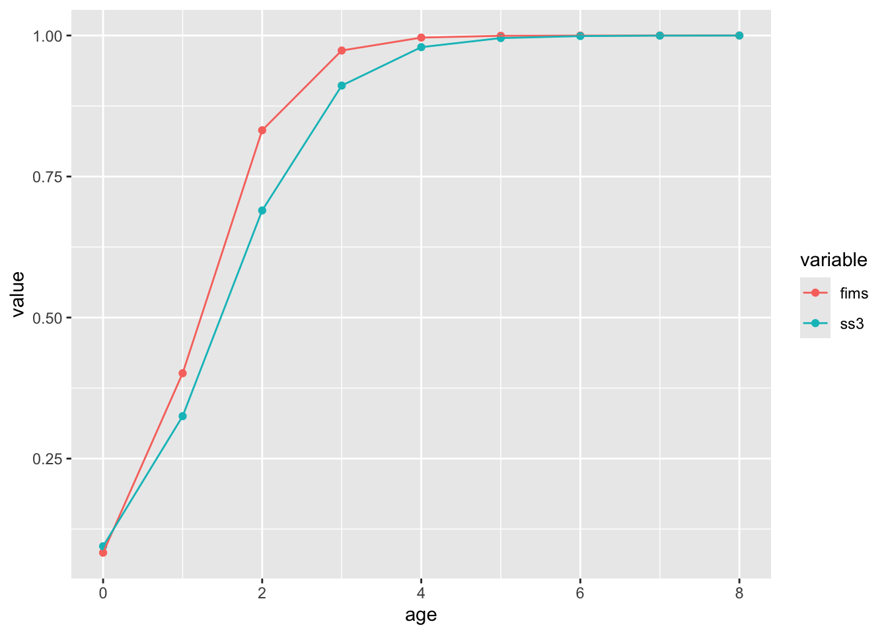

# Names of required packagespackages <-c("dplyr","ggplot2","gt","here","lubridate","remotes","reshape2","shinystan","tidyr","TMB")# Install packages not yet installedinstalled_packages <- packages %in%rownames(installed.packages())if (any(installed_packages ==FALSE)) {install.packages(packages[!installed_packages], repos ="http://cran.us.r-project.org")}# the Bayesian case study requires these extra packagesif (!"StanEstimators"%in%rownames(installed.packages())) {install.packages("StanEstimators", repos =c("https://andrjohns.r-universe.dev", "https://cloud.r-project.org"))}if (!"adnuts"%in%rownames(installed.packages())) { remotes::install_github("Cole-Monnahan-NOAA/adnuts", ref="sparse_M")}# SS3 case studies require r4ssif (!"r4ss"%in%rownames(installed.packages())) { remotes::install_github("r4ss/r4ss")}# Install FIMS: main branch version if on main, dev version on any other branchbranch_name <-system("git branch --show-current", intern =TRUE)use_fims_main <-grepl("main", branch_name)if (use_fims_main) { remotes::install_github("NOAA-FIMS/FIMS")} else { remotes::install_github("NOAA-FIMS/FIMS", ref ="dev")}# Load packagesinvisible(lapply(packages, library, character.only =TRUE))library(FIMS)library(adnuts)R_version <- version$version.stringTMB_version <-packageDescription("TMB")$VersionFIMS_commit <-substr(packageDescription("FIMS")$GithubSHA1, 1, 7)source(file.path("R", "utils.R"))
Add a bulleted list and script describing simplifications you had to make
How I simplified my assessment * Convert two-semester time step to annual * Sum the catch values for MexCal S1 and S2 * Sum the age comps for MexCal S1 and S2 * Drop PNW fishing fleet data (catch and age comp data) * Drop spring AT survey index values * Use expected summary biomass values as AT survey CPUE * Fix Q=1 for AT survey, rather than have fixed, year-specific values * No SR_regime parameter estimated (population assumed to start a equilibrium) * Fixed M at 0.8 * Assume time-invariant logistic selectivity AT survey fleets (time-varying age-0 in benchmark assessment) * Assume time-invariant logistic selectivity MexCal fleet (time-varying in benchmark assessment) * Lorenzen age M -> one M value * No ageing error in FIMS? * Assume time-invariant weight at age for the fishery and survey
Add your script that sets up and runs the model
Code
clear()#--------------------------------------------------------#Logistic function for later uselogistic <-function(x, slope, inflection_point){ out <-1/ (1+exp(-1* slope * (x - inflection_point))) out <-data.frame(x = x, value = out)return(out)}#--------------------------------------------------------#Manually enter data# setwd("C://Users//peter.kuriyama//SynologyDrive/Research//noaa//FIMS")#-----Catchcatch <-data.frame(year =2005:2023, catch =c(29188.50, 53107.00, 69929.40,56317.80, 33546.40, 17466.40, 39383.10, 2585.38, 5705.77, 2558.63, 7.18, 428.26,347.11, 514.20, 619.04, 653.15, 285.89, 508.02, 152.31))# ggplot(catch, aes(x = year, y = catch)) + geom_point() +# geom_line() + scale_y_continuous(label = comma)fimscatch <- tibble::tibble(type ="landings", name ="fleet1",age =NA, datestart =paste0(catch$year, "-01-01"),dateend =paste0(catch$year, "-12-31"), value = catch$catch,unit ="mt", uncertainty =0.05)#-----CPUEcpue <-data.frame(year =2005:2023, obs =c(649619.0, 899635.0, 956354.0, 863281.0, 652029.0,504970.0, 395783.0, 293980.0, 182417.0, 89260.1,46403.0, 40704.0, 44592.1, 48789.1, 53551.8,59765.8, 68451.7, 71612.5, 68957.9))# ggplot(cpue, aes(x = year, y = obs)) + geom_point() + geom_line() +# scale_y_continuous(label = comma)fimsindex <- tibble::tibble(type ="index", name ="survey1",age =NA, datestart =paste0(cpue$year, "-01-01"),dateend =paste0(cpue$year, "-12-31"),value = cpue$obs, unit ='mt', uncertainty = .3)fimsindex$unit <-""#-----Age compositionsacomps <- utils::read.csv("data_files/sardine_acomps.csv") |> dplyr::mutate(value_prop = value / Nsamp) # convert age-comp data to proportions, to match fims-demo.Rmdfimsage <- tibble::tibble(type ="age", name = acomps$name,age = acomps$age, datestart =paste0(acomps$Yr, "-01-01"),dateend =paste0(acomps$Yr, "-12-31"),value = acomps$value_prop, unit ="proportion", uncertainty = acomps$Nsamp)# Fill in missing name/year rows with -999s for value and "" for uncertainty# This works the same as not doing anything, but is not necessary# blank_age_grid <- expand.grid(name = c("fleet1", "survey1"),# age = 0:8,# yr = 2005:2023)# blank_age <- tibble::tibble(type = "age", name = blank_age_grid$name,# age = blank_age_grid$age,# datestart = paste0(blank_age_grid$yr, "-01-01"),# dateend = paste0(blank_age_grid$yr, "-12-31"),# value = -999, unit = "proportion", uncertainty = NA)# missing_ages <- blank_age |># mutate(name_date = paste0(name, datestart)) |># filter(!(name_date %in% paste0(fimsage_init$name, fimsage_init$datestart))) |># select(-name_date)# fimsage <- rbind(fimsage, missing_ages)#fimsage$uncertainty <- 50 Leave as empirical valuesfimscatch$value <- fimscatch$valuefimsindex$unit <-""#-----Weight-at-age# Q: What are the differences in how SS3 and FIMS process wtatage inputs/units?# A: SS3 assumes WAA is expressed in kg, and then converts to mt for biomass calculations# SS3 also expresses natage in terms of 1000s/fish# FIMS assumes WAA is expressed in mt, but expresses natage in fish# WAA input values are supplied to SS3 in kg and FIMS in mt# Model now correctly processes inputs and provides comparable NAA, WAA, and biomass outputs to SS3wtatage <- r4ss::SS_readwtatage("data_files/sardine_wtatage.ss_new") |> dplyr::filter(fleet %in%c(1, 2)) |> dplyr::mutate(fleet =ifelse(fleet ==1, "fleet1", "survey1")) |> tidyr::pivot_longer(cols =`0`:`10`, names_to ="age", values_to ="value") |> dplyr::filter(year !=2024, !(age %in%c("9", "10"))) |># Trim ages 9 and 10 to match age-comps dplyr::mutate(value = value /1000) # WAA converted from kg to mtfimswaa <- tibble::tibble(type ="weight-at-age",name = wtatage$fleet,age = wtatage$age,datestart =paste0(wtatage$year, "-01-01"),dateend =paste0(wtatage$year, "-12-31"),value = wtatage$value,unit ="mt",uncertainty =NA)#Combine everything, formatfimsdat <-rbind(fimscatch, fimsindex, fimsage, fimswaa)fimsdat$age <-as.integer(fimsdat$age)fimsdat$value <-as.numeric(fimsdat$value)# Convert to FIMSFramefinal_fimsdat <-FIMSFrame(fimsdat)# Define fleet specifications for fleet1 and survey1fleet1 <-list(selectivity =list(form ="LogisticSelectivity"),data_distribution =c(Landings ="DlnormDistribution",AgeComp ="DmultinomDistribution",LengthComp ="DmultinomDistribution" ))survey1 <-list(selectivity =list(form ="LogisticSelectivity"),data_distribution =c(Index ="DlnormDistribution",AgeComp ="DmultinomDistribution",LengthComp ="DmultinomDistribution" ))# Create default recruitment, growth, and maturity parametersdefault_parameters <- final_fimsdat |>create_default_parameters(fleets =list(fleet1 = fleet1, survey1 = survey1) )# Update parameters# Control how parameters are updatedestimate_fish_selex <-FALSEestimate_survey_selex <-FALSEestimate_q <-FALSE#Fix at 1estimate_F <-TRUEestimate_recdevs <-TRUEestimate_init_naa <-TRUEestimate_log_rzero <-TRUEsteep <-0.6# sardine steepness is fixed at 0.6M_value <-0.8#.8 worked pretty wellrzero <-17#14.2 is log(R0) in sardine simplified modelnyears <-get_n_years(final_fimsdat)years <-get_start_year(final_fimsdat):get_end_year(final_fimsdat)nages <-get_n_ages(final_fimsdat)ages <-get_ages(final_fimsdat)init_naa <-exp(rzero) *exp(-(ages -1) * M_value)init_naa[nages] <- init_naa[nages] / M_value # sum of infinite series# Update parametersparameters <- default_parameters |>update_parameters( # update fleet1 specificationsmodified_parameters =list(fleet1 =list(LogisticSelectivity.inflection_point.value =1,LogisticSelectivity.inflection_point.estimated = estimate_fish_selex,LogisticSelectivity.slope.value =5,LogisticSelectivity.slope.estimated = estimate_fish_selex,Fleet.log_Fmort.value =log(rep(0.2, nyears)),Fleet.log_Fmort.estimated = estimate_F,DlnormDistribution.log_sd.value =rep(log(sqrt(log(0.01^2+1))), nyears) ) ) ) |>update_parameters( # update survey1 specificationsmodified_parameters =list(survey1 =list(LogisticSelectivity.inflection_point.value =1.2,LogisticSelectivity.inflection_point.estimated = estimate_survey_selex,LogisticSelectivity.slope.value =2,LogisticSelectivity.slope.estimated = estimate_survey_selex,Fleet.log_q.value =0,Fleet.log_q.estimated = estimate_q,DlnormDistribution.log_sd.value =rep(log(sqrt(log(0.1^2+1))), nyears) ) ) ) |>update_parameters(modified_parameters =list(recruitment =list(BevertonHoltRecruitment.log_rzero.value = rzero,BevertonHoltRecruitment.log_rzero.estimated = estimate_log_rzero,BevertonHoltRecruitment.logit_steep.value =-log(1.0- steep) +log(steep -0.2),BevertonHoltRecruitment.log_devs.value =rep(log(1), nyears-1),DnormDistribution.log_sd.value =log(1.2) ) ) ) |>update_parameters(modified_parameters =list(maturity =list(LogisticMaturity.inflection_point.value =1.2,LogisticMaturity.inflection_point.estimated =FALSE,LogisticMaturity.slope.value =1.5, # arbitrary guessLogisticMaturity.slope.estimated =FALSE ) ) ) |>update_parameters(modified_parameters =list(population =list(Population.log_M.value =rep(log(M_value), nages * nyears),Population.log_init_naa.value =log(init_naa),Population.log_init_naa.estimated = estimate_init_naa ) ) )# Fit the modelfit <- parameters |>initialize_fims(data = final_fimsdat) |>fit_fims(optimize =TRUE)
✔ Starting optimization ...
ℹ Restarting optimizer 3 times to improve gradient.
ℹ Maximum gradient went from 0.00654 to 0.00012 after 3 steps.
✔ Finished optimization
✔ Finished sdreport
ℹ FIMS model version: 0.4.0
ℹ Total run time was 0.3011 seconds
ℹ Number of parameters: total=47, fixed_effects=47, and random_effects=0
ℹ Maximum gradient= 0.00012
ℹ Negative log likelihood (NLL):
• Marginal NLL= 1044.96182
• Total NLL= 1044.96182
ℹ Terminal SB=
Code
# Get information about the model and print a few characters to the screenrecruitment_log <-get_log_module("information")
Add your comparison figures
Code
load("data_files/sardine_simplified_res.Rdata")#------------------------------------------------------------------------#------SSB# Q: Is 'ssb' from get_report(fit) calculated assuming 2 genders and a 50:50 ratio?# If so, it might explain the discrepancy between ss3 (1 gender model) and fims (2 genders)ssbs <- ssres$timeseries |> dplyr::select(Yr, SpawnBio) |> dplyr::mutate(fims =c(0, 0, get_report(fit)[["ssb"]][[1]]))names(ssbs)[2] <-'ss3'ssbs |> dplyr::filter(Yr >=2005, Yr <2024) |> tidyr::pivot_longer(names_to ="variable", cols = dplyr::matches("ss3|fims")) |> ggplot2::ggplot(ggplot2::aes(x = Yr, y = value, group = variable, color = variable)) + ggplot2::geom_point() + ggplot2::geom_line() + ggplot2::ylab("Spawning biomass (mt)") + ggplot2::theme_bw() + ggplot2::xlab("year") + ggplot2::theme(legend.position.inside =c(.9, .9))
Warning: attributes are not identical across measure variables; they will be
dropped
Code
ggplot2::ggplot( sel_survey, ggplot2::aes(x = age, y = value, group = variable, color = variable)) + ggplot2::geom_point() + ggplot2::geom_line()

Add comparison tables
What was your experience using FIMS? What could we do to improve usability?
Tools to check: * data were inputted correctly (dimension checks) * starting values and settings are reasonable * Perhaps have a model template file that will work as is, then users can modify as necessary * I had issues installing FIMS with install_github that seemed to be related to R settings
Model: * streamline configuration of fleets and maybe make it easier to add additional fleets (perhaps clone existing ones then change specific settings) * Think about ways to modify single model settings based on say different starting values
Output: * include all parameter values and names (fixed and estimated, also show starting values) * Code to generate a default set of figures and tables for use in assessment documents/presentations
What features are most important to add based on this case study?
The ability to start the model at non-equilibrium conditions (In SS3 there is a SR_regime parameter and Initial F to match equilbirium age comps to first year of data age comps) *Does the model year start in the first year of the data input?